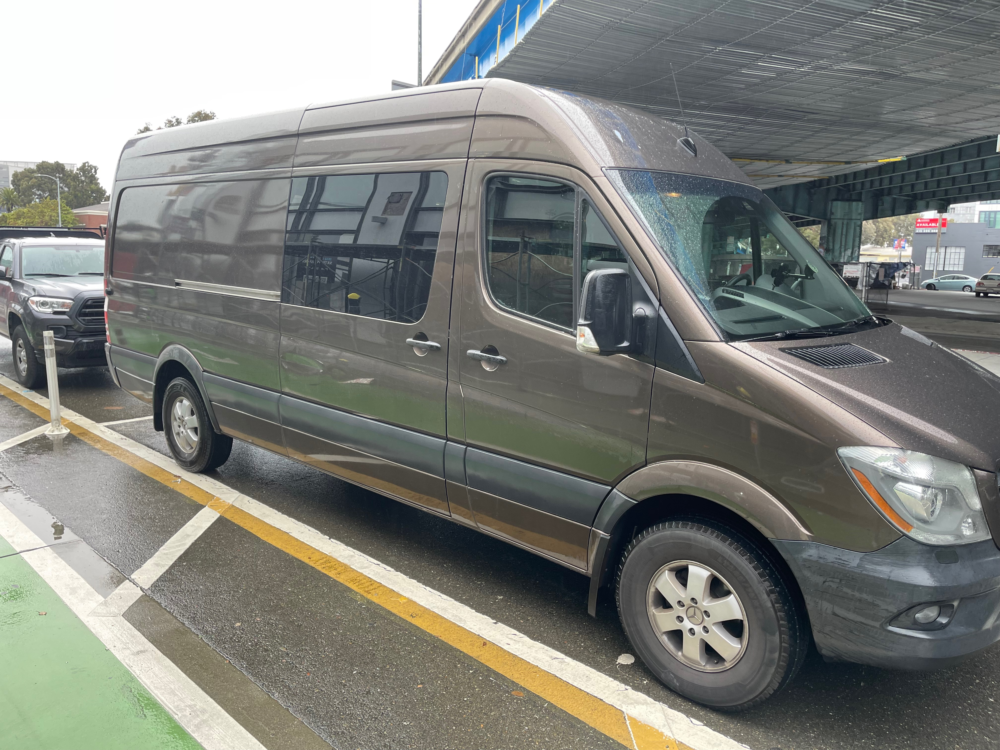

Introducting KV Coffee Mobile Service Van
Ever since we first opened, we have been approached to provide coffee services to events and festivals. While this seemed like a golden opportunity, operating an espresso machine and coffee brewer in a remote location is challeging. Equipment requires high wattage power supply as well as clean and waste water.
For the past year and a half I've been working on outfitting a 2016 Mercedes Sprinter 2500 as a small coffee and espresso bar.
